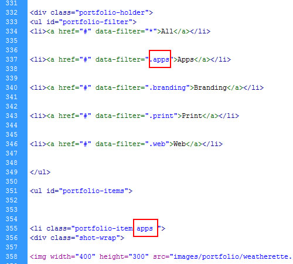

Atrium - One Page Responsive HTML Template - Documentation
by MatchThemes - www.matchthemes.com
Hi there,
First of all, thank you for purchasing the Atrium - One Page Responsive HTML Template. Please take the time and read the instructions below. If you have any future question/problems send us an email at: support@matchthemes.com
Table of Contents
- 1. Getting Started
- 1.1 General Info
- 1.2 Big Image and Parallax Effect
- 1.3 About & Team Members Section
- 1.4 Portfolio Section
- 1.5 Blog Section
- 1.6 Change Contact Form Email
- 2. Files Used
- 2.1 CSS Files
- 2.2 Javascript Files
1. Getting Started
1.1 General Info
In order to start modifing the template go to atrium-html folder in the download package. The general css file is styles.css file. To change colors for individual elements you have to go to css/colors.css file.
Note: You'll have the possibility to use one of the preset color templates found in preset-colors folder.
1.2 Big Image and Parallax Effect
In order to change the top big image go to css/colors.css line 32.
Also in this file (colors.css) you can change the background images for sub-sections (team members line 97, testimonials 113, price table line 122)
The parallax effect is initialized in js/init.js file line 31.
1.3 About Page Setup
Open index.html and go to line 79. There is the beginning of About section. Change the text, add / edit team members or add / edit skills.
For team member image you only have to replace the default one with your own, normal image. Make sure is at least 210x210 pixels.
The team members flexslider properties are at line 115 in the js/init.js file.
1.4 Portfolio Section
Open index.html and go to line 315. There is the beginning of Porfolio section.
a. Add new item: you have to copy and paste the portfolio-item li tag.
b.Change filter category: you'll have to add a corresponding class for the item with the ones found in the portfolio-filter list.An item can have more than one category. Check the image below.

c.jQuery script: open js/init.js and go to line 93.
1.5 Blog Section
Open index.html and go to line 821. There is the beginning of Blog section. Add / Edit / Delete articles.
!Important: make sure the image for an article is at least 400x300 pixels.
The template for a single article is: blog-single-post.html.
1.6 Change Subscribe Form Email
You have to edit the include/contact-process.php and change the $recipient variable value with your own email address.

2. Files Used
2.1 CSS Files
All CSS files, with the exception of the main CSS file (style.css) can be found in the theme's /css/ folder.
style.css - Main stylesheet and determines the majority of the templates styling.
bootstrap.css & bootstrap-responsive.css - The styles for the Twitter Bootstrap framework.
2.2 Javascript Files
Portfolio Filter - jQuery Isotope.
FlexSlider - item porfolio slideshow.